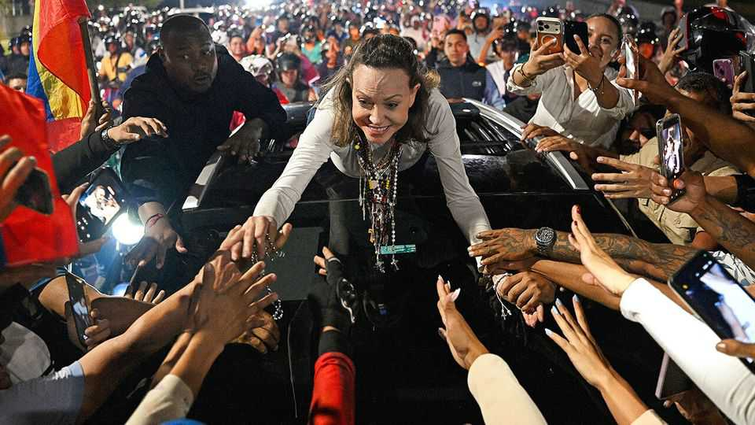

Back in Venezuela, María Corina Machado may speed the return of democracy
She will push for elections to happen sooner than Donald Trump had in mind

Oct 29th 2026
It was, as is her style, a homecoming laden with symbolism. On October 25th the first images to be released of María Corina Machado’s return to Venezuela showed the opposition leader surrounded by supporters next to the statue of the Divina Pastora. The shrine, in a church near the city of Barquisimeto, depicts the Virgin Mary as a shepherdess guiding her flock.
Her return after a ten-month exile took millions of Venezuelans—and possibly the country’s ruling regime—by surprise. For months the wildly popular politician (pictured) had been promising to come back “soon” to Venezuela. She had been there (albeit in hiding) until December, when she left the country to collect the Nobel peace prize. In recent months she had made several attempts to get back. On each occasion it seemed the regime foiled her plans. This time she crossed the land border from Colombia.
Her presence in Venezuela will complicate the unusual, cosy relationship the administration of Donald Trump has formed with the disreputable regime of Delcy Rodríguez. Ms Rodríguez, who has quietly dropped the “interim” from her presidential title in recent weeks, has been running the country since January 3rd, when special forces captured her then boss, Nicolás Maduro, and took him to face drug-trafficking charges in New York.
Mr Trump claimed not to know about Ms Machado’s return when he was asked about it. “She is a very nice woman,” he said on October 25th. “She gave me her Nobel prize, so how can I say anything else?” In January Ms Machado handed the medal, which she won for her campaign for democracy in Venezuela, to Mr Trump (who claimed to deserve it more). She said at the time she made the gesture in gratitude for his “decisive support of our cause”.
She has plenty of reason to doubt the extent of that support. Mr Trump’s praise for Ms Rodríguez—whom he calls “terrific”—has always been fulsome. But he has long been ambivalent towards Ms Machado, a former congresswoman from a once wealthy industrialist family who was persecuted by Mr Maduro. She has called for new elections in Venezuela, to be held by next July, and says she will stand as a candidate. This has not got Mr Trump’s backing. “I don’t think they’re ready [for elections] yet,” he said in September.
His focus instead has been on portraying the capture of Mr Maduro and its aftermath as an unmitigated success. His government in August secured majority control of 65bn barrels of the country’s oil, about a fifth of its proven reserves, in an agreement with Venezuela and a private oil company. “We took over Venezuela very successfully and they’ve sent me as a gift a boatload of a million barrels of oil,” he bragged at a campaign event in Texas, on October 27th. He later quipped that maybe Venezuela “will become a prosperous 51st state”. He often claims that Venezuelans are “dancing in the streets” in celebration of all he has achieved.
Mr Trump’s problem, and Ms Machado’s opportunity, is that none of this is true. Few Venezuelans view his propping up of Ms Rodríguez, or their own economic situation, as a success story. Mr Trump’s own popularity in Venezuela has slumped in recent months. “He got rid of Maduro, which is good, but it is basically the same shit here,” says Eduardo, a computer technician in Caracas, the capital.
America insists that it has a plan with Venezuela, and that it is on track. On October 26th an official at the State Department said the next stage of the “transition” is to replace the members of Venezuela’s Supreme Court by mid-December, followed by an overhaul of the electoral council. The idea is that Ms Rodríguez would then at some point declare the presidency “vacant”, triggering elections within six months. Perhaps that would be in late 2027, or 2028. The US secretary of state, Marco Rubio, said after Ms Machado’s return that the Rodríguez regime would not be allowed to wait out the process until the Trump administration ends: “We have timelines that are agreed to, and so far, they’ve met every one.”
Will Ms Machado abide by the same timeline? Or will she try to accelerate it? On October 25th a caravan of supporters accompanied her in a triumphant return to Caracas. For a giddy few hours, Venezuelans really were dancing in the streets. And it was not to Mr Trump’s tune. ■